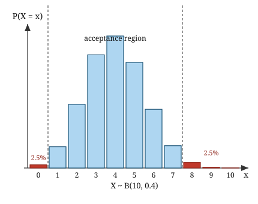

<script src="/assets/redirect.js"></script>
<section class="theory" data-section="S2-1.2">
<h2>1.2 One-tailed and two-tailed hypothesis tests</h2>
<p class="src">Based on Cambridge International AS &amp; A Level Mathematics: Probability &amp; Statistics 2 Coursebook (Jayne Kranat), Chapter 1 Hypothesis testing, printed pp.14–16 (Key point 1.6, Worked example 1.6, Exercise 1B). Own wording and new numbers. Type I and Type II errors are left to the next subsection.</p>
<p class="key-words"><strong>Key words:</strong> <em>one-tailed test</em>, <em>two-tailed test</em></p>
<p>In the previous subsection the claims had a definite direction: a proportion was said to have decreased, or a spinner was said to be biased towards one colour. Those tests are <strong>one-tailed tests</strong>. The alternative hypothesis uses \(\lt\) or \(\gt\), and the critical region lies in a single tail of the distribution.</p>
<p>If the claim is only that a parameter is <em>different</em> from the value in \(H_0\) — that a process is not working correctly, or that a popularity has changed, with no direction given — then the test is a <strong>two-tailed test</strong>. The alternative hypothesis uses \(\neq\), and the significance level is shared between the two tails.</p>
<p><strong>Key point.</strong> If a claim is for neither an increase nor a decrease, but only a different value of the parameter, then the hypothesis test is two-tailed. In a two-tailed test use \(\neq\) to express the alternative hypothesis and share the significance level percentage between the two tails, that is, between the two critical regions.</p>
<p>Use the wording in the question to decide. Words that mean increase or decrease point to a one-tailed test. A phrase that means the parameter is different, or that a claim is simply incorrect, points to a two-tailed test. In most two-tailed tests the significance level is shared equally; an unequal split would need a modelling reason that the question itself would have to supply.</p>
<p>The observed tail probability is then compared with half of the significance level, not with the whole of it. A result that is significant in a one-tailed test at, say, the \(5\%\) level need not be significant in the corresponding two-tailed test, because the threshold in each tail is then only \(2.5\%\).</p>
<div class="worked-example">
<h4>Worked example 1: A two-tailed binomial test</h4>
<p class="src">Book: Worked example 1.6, pp.15–16, and the spinner illustration on p.14; new numbers</p>
<p>A machine is supposed to produce packets of which \(40\%\) are marked as special editions. After a change to the packing line, a manager thinks that the true percentage is no longer \(40\%\), but does not know whether it has increased or decreased. She inspects a random sample of \(10\) packets and finds that only one of them is marked as a special edition.</p>
<p><strong>a</strong> Test at the \(5\%\) significance level whether there is evidence that the percentage is no longer \(40\%\).</p>
<p><strong>b</strong> State the critical values of the test.</p>
<p><strong>c</strong> Would the conclusion in part <strong>a</strong> be different if the test were one-tailed, with the alternative that the percentage had decreased?</p>
<ol class="steps">
<li>Let \(X\) be the number of special-edition packets in the sample. Under \(H_0\), \(X\sim\mathrm{B}(10,\,0.4)\). The hypotheses are \(H_0{:}\ p=0.4\) and \(H_1{:}\ p\neq 0.4\), and the test is two-tailed at the \(5\%\) level, so each tail is compared with \(2.5\%\). The lower tail is
\[\mathrm{P}(X\leqslant 1)=(0.6)^{10}+10(0.4)(0.6)^{9}=0.0464\]
to 3 significant figures. This is greater than \(0.025\), so \(H_0\) is accepted: there is insufficient evidence, at the \(5\%\) level, that the percentage has changed. <span class="mark">M1 A1</span></li>
<li>For the lower tail, \(\mathrm{P}(X\leqslant 0)=0.00605\leqslant 0.025\) and \(\mathrm{P}(X\leqslant 1)=0.0464\gt 0.025\), so \(0\) is a critical value. For the upper tail, \(\mathrm{P}(X\geqslant 7)=0.0548\gt 0.025\) and \(\mathrm{P}(X\geqslant 8)=0.0123\leqslant 0.025\), so \(8\) is also a critical value. The critical region is \(X=0\) or \(X\geqslant 8\). <span class="mark">A1</span></li>
<li>A one-tailed test of \(H_1{:}\ p\lt 0.4\) at the \(5\%\) level compares \(0.0464\) with \(0.05\). That probability is less than \(0.05\), so \(H_0\) would be rejected. The conclusion would be different. <span class="mark">A1</span></li>
</ol>
<p></p>
<p class="final"><strong>Answer:</strong> accept \(H_0\); critical values \(0\) and \(8\); yes, a one-tailed test at \(5\%\) would reject \(H_0\)</p>
</div>
<p>The two critical values of a discrete two-tailed test need not be symmetrically placed about the mean, because the tail probabilities of a binomial distribution are not in general equal in pairs. The observed value \(X=1\) in the example lies in the acceptance region of the two-tailed test, even though it is rather smaller than the mean \(np=4\).</p>
<h3>Common mistakes</h3>
<ul>
<li>Writing \(H_1\) with \(\lt\) or \(\gt\) when the wording only says that the value is different or that a claim is incorrect.</li>
<li>Comparing the observed tail probability with the full significance level in a two-tailed test, instead of with half of it.</li>
<li>Expecting the two critical values to be at equal distances from the mean of a binomial distribution.</li>
<li>Stating the conclusion as a proof that \(H_0\) is true (or false), rather than as a decision about evidence at the stated level.</li>
</ul>
<h3>Quick checks</h3>
<div class="quick-check">
<h4>Quick check 1</h4>
<p>A two-tailed test is carried out at the \(10\%\) significance level, with the significance level shared equally between the two tails. With what percentage is each tail probability compared?</p>
<details><summary>Worked solution</summary>
<p>Half of \(10\%\) is \(5\%\).</p>
</details>
</div>
<div class="quick-check">
<h4>Quick check 2</h4>
<p>Given that \(X\sim\mathrm{B}(8,\,0.25)\), find \(\mathrm{P}(X\leqslant 1)\), correct to 3 significant figures. (This is the lower-tail probability that would be compared with half of the significance level in a two-tailed test.)</p>
<details><summary>Worked solution</summary>
<p>\(\mathrm{P}(X\leqslant 1)=(0.75)^{8}+8(0.25)(0.75)^{7}=0.367\) to 3 significant figures.</p>
</details>
</div>
<div class="quick-check">
<h4>Quick check 3</h4>
<p>Under \(H_0\) a random variable has the distribution \(\mathrm{B}(20,\,0.4)\). What is the expected number of successes in the \(20\) trials?</p>
<details><summary>Worked solution</summary>
<p>The mean is \(np=20\times 0.4=8\).</p>
</details>
</div>
<p class="marks-key">B marks are for a correct statement; M marks are for a correct method; A marks are for an accurate result.</p>
</section>
